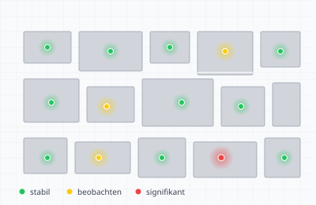
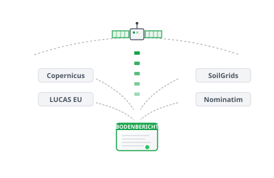
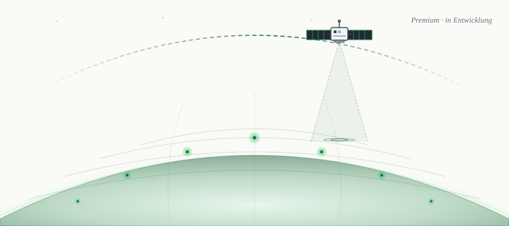

Automatisiertes Screening für Ihre Wunsch-Immobilie — Setzungen, Altlasten-Hinweise und Bodenqualität auf Basis offizieller EU-Daten.

Datengrundlage
Offizielle EU-Quellen, wissenschaftlich nachvollziehbar. Die kostenlose Kurzfassung zeigt die Ampel-Einstufung, die Premium-Fassung (in Entwicklung) die vollständigen Detailwerte.
Copernicus EGMS-Satellitendaten. Kurzfassung: Ampel + Messpunkte. Geschwindigkeitswerte in Premium.
Datengrundlage LUCAS EU. Detailwerte in Premium.
Beispiel: Premium-Fassung (in Entwicklung)
Musterbericht — kostenlose Kurzfassung zeigt Ampel + Bodenbewegung

In 3 einfachen Schritten
Schnell, unkompliziert und wissenschaftlich präzise.
Geben Sie Ihre Adresse online ein.
Pipeline verknüpft Copernicus, LUCAS und SoilGrids.
PDF mit Ampel-Einschätzung direkt ins Postfach.

Premium in Entwicklung
Schwermetall-Analyse, pH-Wert, Bodenart-Details und vollständige InSAR-Zeitreihe. Trag dich in die Warteliste ein und wir benachrichtigen dich, sobald die Premium-Version verfügbar ist.
